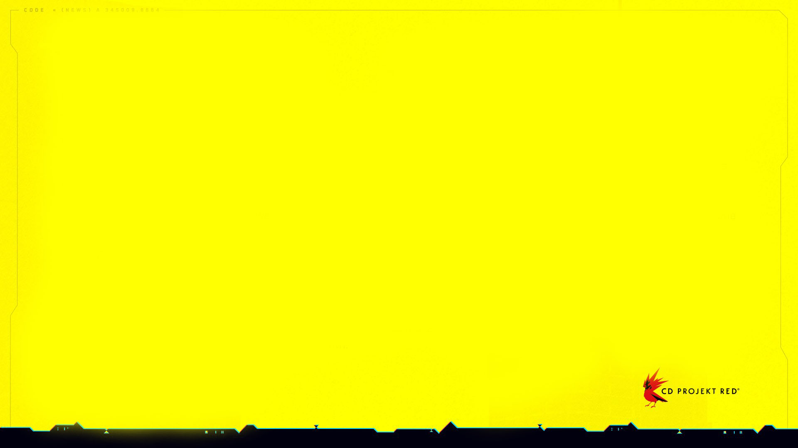

La historia de Cyberpunk 2077
Night City no es solo una ciudad, es un experimento que salió mal… y aun así siguió creciendo. Todo comenzó en 1994, cuando Richard Night soñó con una utopía libre del crimen y la corrupción, un lugar donde el progreso no dependiera de gobiernos sino de visión.
Nunca llegó a verla terminada: fue asesinado en 1998, y con su muerte también murió ese sueño. Lo que quedó fue una ciudad incompleta, vulnerable… perfecta para ser tomada por fuerzas mucho más grandes.
Tras su muerte, la ciudad fue rebautizada como Night City y rápidamente cayó bajo el control de megacorporaciones. Empresas como Arasaka y Militech dejaron de ser simples compañías para convertirse en poderes absolutos.
En el año 2023, la Cuarta Guerra Corporativa arrasó todo. Explosiones, caos y destrucción masiva transformaron Night City en un campo de batalla. No fue una guerra por ideales… fue una guerra por control.
Cuando el polvo se asentó, la ciudad seguía en pie, pero irreconocible. Las cicatrices del conflicto quedaron marcadas en cada calle, cada edificio… y en cada persona que logró sobrevivir.
Décadas después, en 2077, el mundo no se reconstruyó… se deformó. Las corporaciones gobiernan, los políticos obedecen y la gente común sobrevive como puede. La desigualdad es extrema, y la violencia es parte del día a día.
Los implantes cibernéticos son ahora parte del cuerpo humano. Mejoran habilidades, reflejos y fuerza, pero también erosionan lentamente la identidad. Las calles están dominadas por bandas, los fixers mueven los hilos y los mercenarios —los edgerunners— viven al límite.
En este mundo sos V, un desconocido intentando hacerse un nombre en la ciudad donde los sueños se venden… y se rompen todos los días. Desde los barrios marginales hasta los rascacielos corporativos, cada decisión define tu destino. Porque en Night City solo hay una verdad: podés convertirte en leyenda… o desaparecer sin dejar rastro. “No importa cómo vivas… solo importa cómo morís.” Bienvenido a :contentReference[oaicite:0]{index=0}, choom.